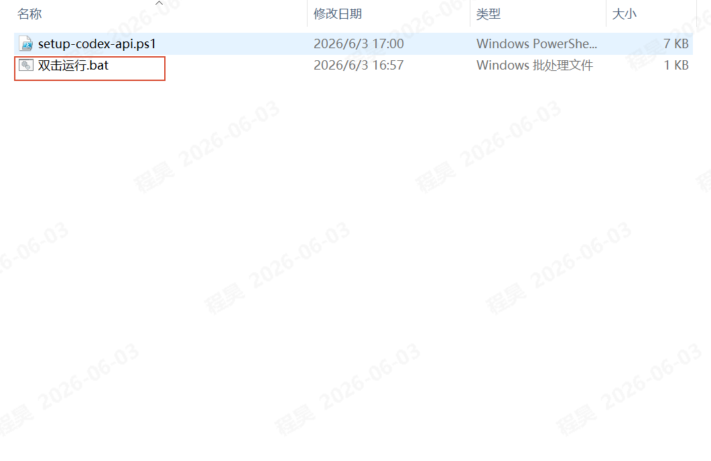
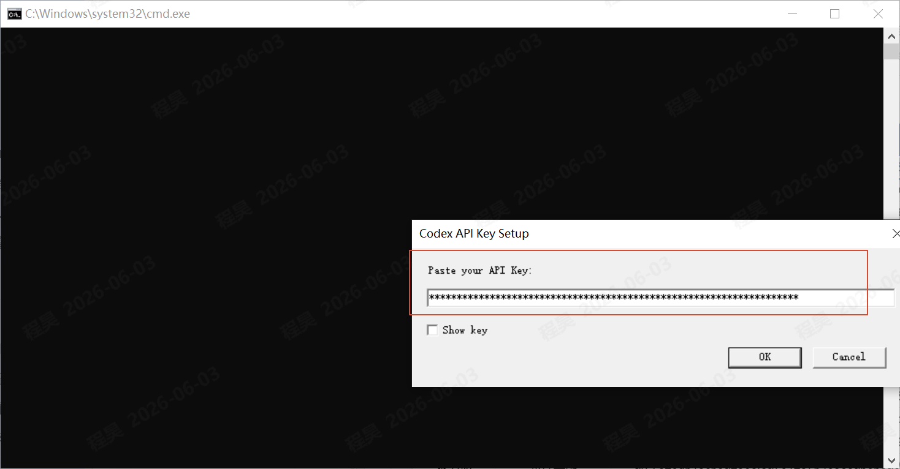
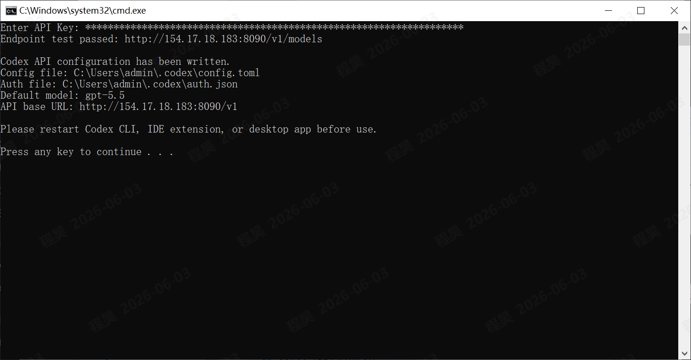
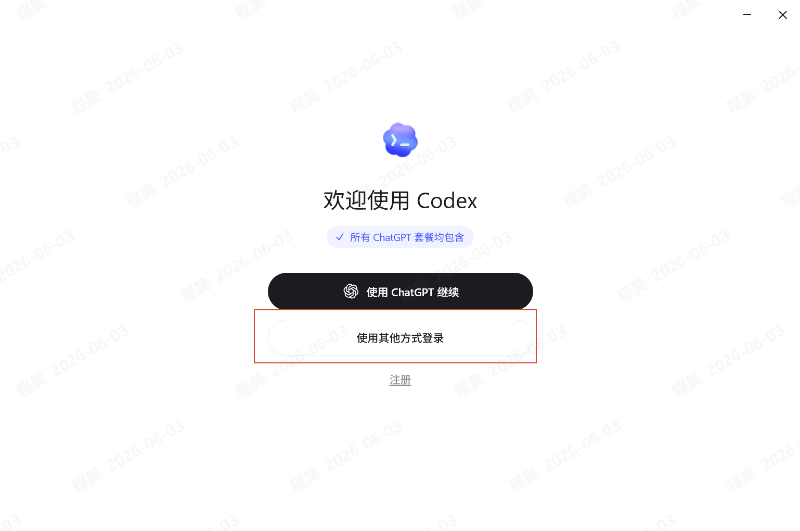
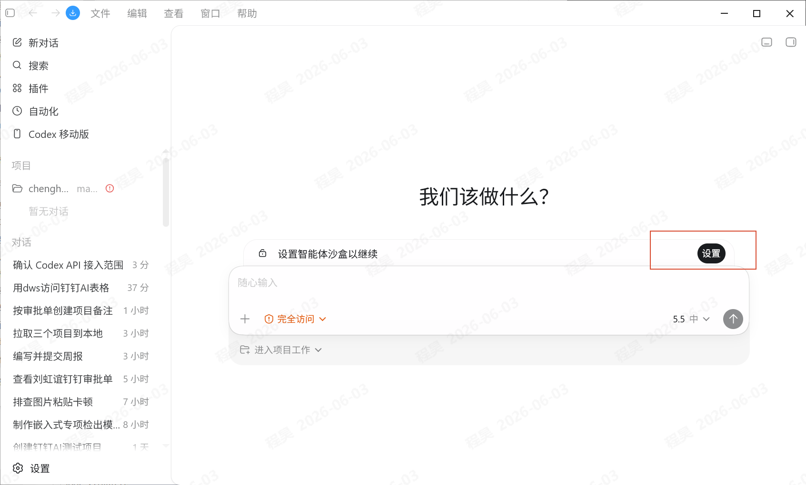
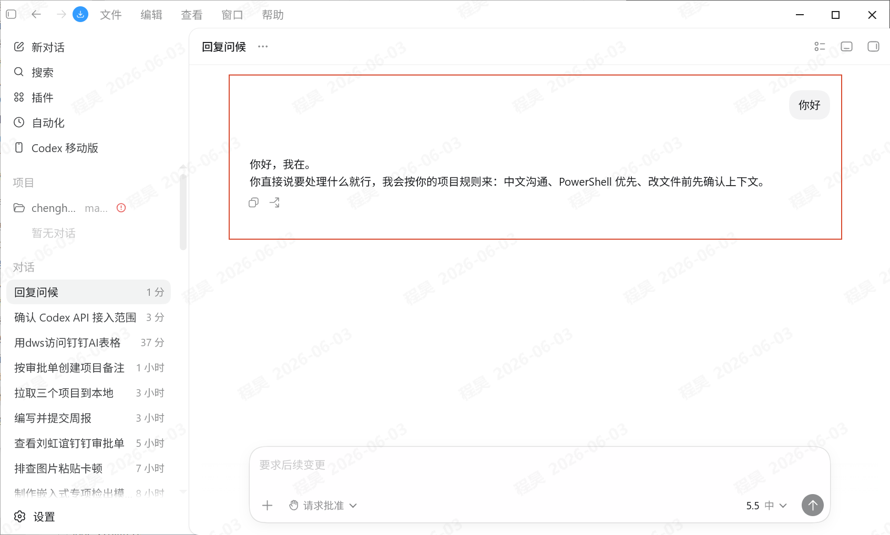

提效工具
Codex一键配置API工具
Codex一键配置API工具用于快速写入 Codex API Key。拿到分配好的 key 后，下载工具包并按下方图文步骤操作，即可完成配置和基础验证。
下载工具包后先解压，进入文件夹双击运行配置程序。
复制分配好的 API Key，粘贴到弹窗后点击 OK。
按提示完成登录、沙盒设置和简单测试，确认 Codex 可正常响应。
图文教程
步骤 1
下载解压后双击
从提效工具库下载压缩包，解压后进入文件夹，双击 双击运行.bat 启动配置程序。

步骤 2
复制分配好的 key，点击 OK
复制分配好的 key，粘贴到输入框中，确认没有多余空格后点击 OK。

步骤 3
配置成功界面，然后关闭
看到配置成功界面后，关闭配置窗口。后续重新打开 Codex，让新的 key 配置生效。

步骤 4
Codex 登录方式选择
如果 Codex 提示选择登录方式，按需选择其他方式登录，再输入 key 完成登录。

步骤 5
设置沙盒
进入 Codex 设置后，按团队要求设置沙盒权限，确保后续任务能在合适的权限范围内运行。

步骤 6
测试 Codex
打开测试项目或当前工作区，输入一个简单任务，确认 Codex 可以正常执行和回复。

注意事项
| API Key 获取 | API Key 统一按团队分配流程获取，不要在公共聊天、截图、文档或代码仓库中暴露完整 key。 |
| 配置生效 | 工具提示成功后，建议重新打开 Codex，再进行测试。 |
| 异常处理 | 如果测试时仍无法正常使用，先确认 key 是否完整复制，再检查 Codex 登录方式和沙盒设置。 |